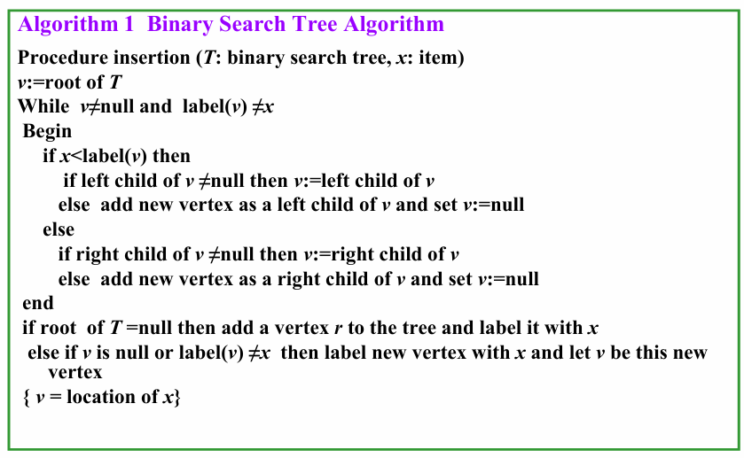
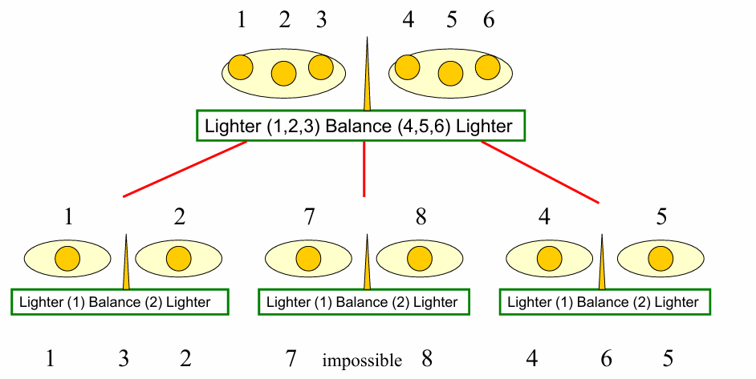
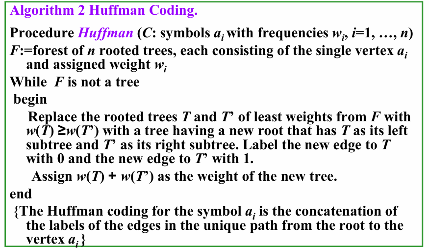
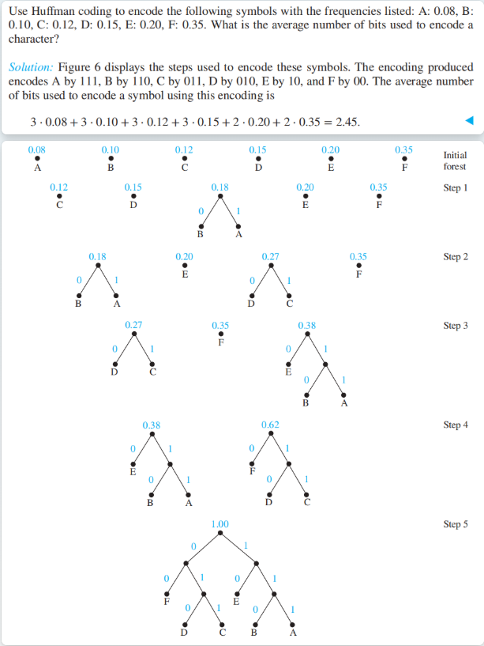
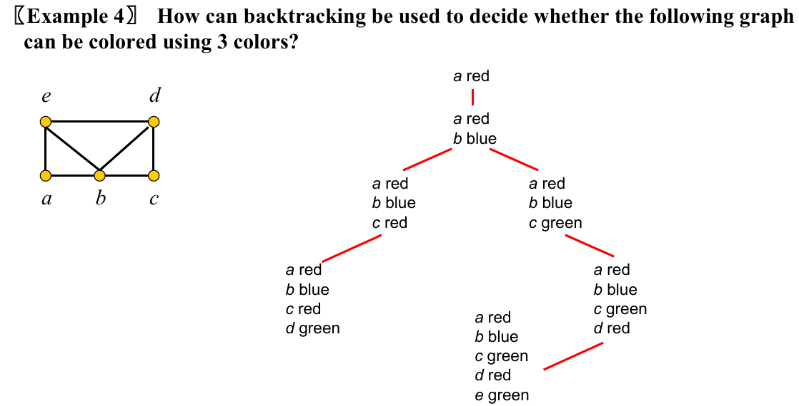

Ch11 Trees¶
11.1 Introduction to Trees¶
1. Tree¶
【Definition】: A tree is a connected undirected graph with no simple circuits.
- Note: Any tree must be a simple graph.
【Definition】: A forest is a graph that has no simple circuit, but is not connected. Each of the connected components in a forest is a tree.
【Theorem 1】: An undirected graph is a tree if and only if there is a unique simple path between any two of its vertices.
Root tree¶
【Definition】: A rooted tree有根树 is a tree in which one vertex has been designated as the root and every edge is directed away from the root.
【Definition】: A rooted tree is called a m-ary tree m叉树 if every internal vertex has no more than \(m\) children.
【Definition】: A rooted tree is called a full m-ary tree 满m叉树 if every internal vertex has exactly \(m\) children.
【Definition】: An ordered rooted tree is a rooted tree where the children of each internal vertex are ordered.
- In an ordered binary tree, the two possible children of a vertex are called the left child and the right child, if they exist.
- The tree rooted at the left child is called the left subtree, and that rooted at the right child is called the right subtree.
Rooted Tree Terminology¶
- Parent & Child
The parent of a non-root vertex \(v\) is the unique vertex \(u\) with a directed edge from \(u\) to \(v\).
- Sibling
Vertices with the same parent are called siblings.
-
Ancestors & Descendants
-
The ancestors of a non-root vertex are all the vertices in the path from root to this vertex.
-
The descendants of vertex \(v\) are all the vertices that have \(v\) as an ancestor.
-
Leaf
A vertex is called a leaf if it has no children.
- Internal Vertex
A vertex that have children is called an internal vertex.
- Subtree
The subtree at vertex \(v\) is the subgraph of the tree consisting of vertex \(v\) and its descendants and all edges incident to those descendants.
2. Properties of Trees¶
【Theorem 2】 A tree with \(n\) vertices has \(n-1\) edges.
【Theorem 3】 A full \(m-ary\) tree with \(i\) internal vertices contains \(n=mi+1\) vertices.
【Theorem 4】 A full \(m-ary\) tree with
- \(n\) vertices has \(i=\frac{n-1}{m}\) internal vertices and \(l=\frac{(m-1)n+1}{m}\) leaves
- \(i\) internal vertices has \(n=mi+1\) vertices and \(l=(m-1)i+1\) leaves
- \(l\) leaves has \(n=\frac{ml-1}{m-1}\) vertices and \(i=\frac{l-1}{m-1}\) internal vertices
The level层级 of vertex \(v\) in a rooted tree is the length of the unique path from the root to \(v\).
The height高度 of a rooted tree is the maximum of the levels of its vertices. (\(\text{the height of root}=0\))
- A rooted \(m-ary\) tree of height \(h\) is called balanced平衡的 if all its leaves are at levels \(h\) or \(h-1\).
【Theorem 5】There are at most \(m^h\) leaves in an \(m-ary\) tree of height \(h\).
【Corallary】
- If an \(m-ary\) tree of height $h $ has \(l\) leaves, then \(h ≥ ⌈ log_m l ⌉\).
- If the \(m-ary\) tree is full and balanced, then \(h = ⌈ log_m l ⌉\).
11.2 Applications of Trees¶
1. Binary Search Trees¶
- A binary search tree can be used to store items in its vertices. It enables efficient searches.
- Binary search tree
- An ordered rooted binary tree
- Each vertex contains a distinct key value
- The key values in the tree can be compared using “greater than” and “less than”, and
- The key value of each vertex in the tree is less than every key value in its right subtree, and greater than every key value in its left subtree.

2. Decision Trees¶
- Rooted trees can be used to model problems in which a series of decisions leads to a solution.
- A rooted tree in which each internal vertex corresponds to a decision, with a subtree at these vertices for each possible outcome of the decision, is called a decision tree决策树.

3. Prefix Codes¶
- To ensure that no bit string corresponds to more than one sequence of letters, the bit string for a letter must never occur as the first part of the bit string for another letter. Codes with this property are called prefix codes前缀码.
Huffman Coding¶

- Huffman Tree 哈夫曼树
流程：
初始状态下，有一片森林，其中每棵树只有一个表示不同字符的节点
每一步中，我们挑选权重 ( 频率 ) 最小的两棵树，组成新的树：
引入一个新的根
- 将权重较大的树作为左子树
- 将权重较小的树作为右子树
- 新的树的权重为 2 棵树的权重和
然后将新的树放回原来的森林中
- 直到只剩下一棵树时为止

11.3 Tree Traversal¶
- A traversal algorithm is a procedure for systematically visiting every vertex of an ordered rooted tree.
- Tree traversals are defined recursively.
1. Preorder Traversal¶
procedure preorder (T: ordered rooted tree)
r := root of T
list r
for each child c of r from left to
right
T(c) := subtree with c as root
preorder(T(c))
2. Inorder Traversal¶
procedure inorder (T: ordered rooted tree)
r := root of T
if r is a leaf then list r
else
l := first child of r from left to right
T(l) := subtree with l as its root
inorder(T(l))
list(r)
for each child c of r from left to right
T(c) := subtree with c as root
inorder(T(c))
3. Postorder Traversal¶
procedure postordered (T: ordered rooted tree)
r := root of T
for each child c of r from left to right
T(c) := subtree with c as root
postorder(T(c))
list r
Expression Trees¶
A Binary Expression Tree is a special kind of binary tree in which:
- Each leaf node contains a single operand,
- Each nonleaf node contains a single operator, and
- The left and right subtrees of an operator node represent subexpressions that must be evaluated before applying the operator at the root of the subtree.
- Infix Form中缀式: An inorder traversal of the tree representing an expression produces the original expression when parentheses are included except for unary operations, which now immediately follow their operands.
- infix form: \(3*ln(x+1)+a/x \uparrow 2\)
- Prefix Form前缀式: The expression obtained by an preorder traversal of the binary tree is said to be in prefix form ( Polish notation波兰表示法 ).
- prefix form: \(+*3ln+x1/a\uparrow x2\)
- Postfix Form后缀式: The expression obtained by an postorder traversal of the binary tree is said to be in postfix form ( reverse Polish notation逆波兰表示法 ).
- postfix form: \(3x1+ln*ax2\uparrow /+\)
11.4 Spanning Trees¶
【Definition1】Let \(G\) be a simple graph. A spanning tree生成树 of \(G\) is a subgraph of \(G\) that is a tree containing every vertex of \(G\).
【Theorem 1】A simple graph is connected if and only if it has a spanning tree.
Depth-first search¶
-
Depth-first search深度优先算法 (also called backtracking回溯) -- this procedure forms a rooted tree, and the underlying undirected graph is a spanning tree.
-
先在图中任意选取一个顶点作为根节点
- 从根节点出发，连续添加顶点和边，其中新增的边一定与最后添加的顶点相关联，且新添的顶点尚不在路径中，尽可能地往下这样做
- 当访问完所有顶点时，我们可以得到一棵生成树
- 否则 ( 遇到“死胡同”)，返回到路径中倒数第二个顶点，若有可能，从该顶点出发，按照上面的步骤重新寻找新的路径 ( 要找未被访问过的顶点 )。如果找完所有可能，再返回上一个顶点，再寻找新的路径，直至所有顶点均被访问过
procedure DFS(G: connected graph with vertices v1, v2, …, vn)
T := tree consisting only of the vertex v1
visit(v1)
procedure visit(v: vertex of G)
for each vertex w adjacent to v and not yet in T
add vertex w and edge {v,w} to T
visit(w)
Breadth-first search¶
-
Breadth-first search宽度优先算法
-
先在图中任意选取一个顶点作为根节点
- 将所有与根节点相邻的顶点添加至树内，对它们任意排序，这些顶点因而成为生成树中层级为 1 的节点，
- 对于层级为 1 的所有节点，按顺序依次访问所有与这些顶点关联的边上的另一个顶点，且保证不会产生简单环，对得到的顶点进行任意排序
- 这样，我们得到层级为 1 的节点的所有孩子，它们构成层级为 2 的节点
- 如此往复，直至所有顶点被添加至树内
procedure BFS(G: connected graph with vertices v1, v2, …, vn)
T := tree consisting only of the vertex v1
L := empty list visit(v1)
put v1 in the list L of unprocessed vertices
while L is not empty
remove the first vertex, v, from L
for each neighbor w of v
if w is not in L and not in T then
add w to the end of the list L
add w and edge {v,w} to T
Backtracking scheme¶

11.5 Minimum Spanning Trees¶
【Definition1】A minimum spanning tree in a connected weighted graph is a spanning tree that has the smallest possible sum of weights of its edges.
Prim's algorithm¶
- 思想：在图中剩余的边里，将与树中节点有关联的权重最小的边加到树中
Procedure Prim (G: weighted connected undirected graph with n vertices)
T:= a minimum-weight edge
for i:= 1 to n-2
begin
e:= an edge of minimum weight incident to a vertex in
T and not forming a simple circuit in T if added to T.
T:= T with e added
end {T is a minimum spanning tree of G}
Kruskal's algorithm¶
- 挑选当前图中剩余的边里权重最小的边，且不会产生环
procedure Kruskal (G: weighted connected undirected graph with n vertices)
T:= empty graph
for i:= 1 to n-1
begin
e:= any edge in G with smallest weight that does not
form a simple circuit when added to T
T:= T with e added
end {T is a minimum spanning tree of G}